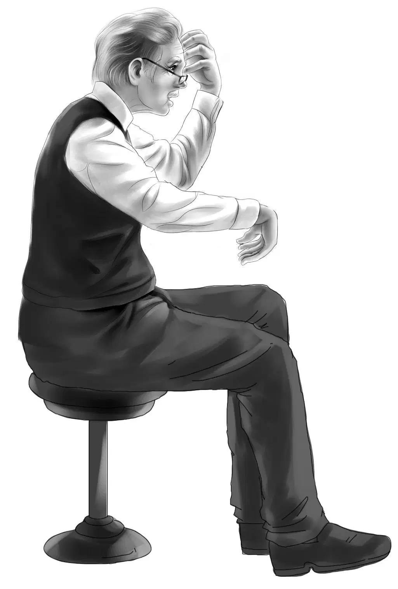
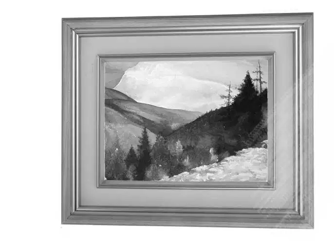
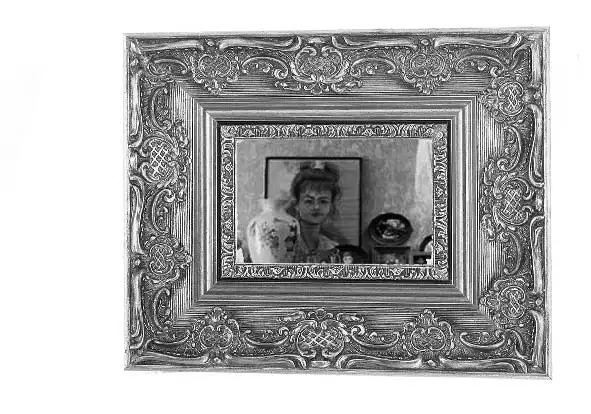

Good Guess by Benny

八月里的第一天，奥登一家早早地起了床，因为这天，奥登先生要向孩子们宣布他的暑假计划。
爷爷走进饭厅吃早餐时，亨利、杰西、维莉和班尼早已等候在那里了。
“暑假恐怕没剩几天了，”亨利说，“单是帮邻居建造树屋就花了不少时间，大大超出了咱们的预计。”
“放心吧。”奥登先生坐了下来，“我计划的是一次短途旅行，花不了多少时间。”
班尼也跟着坐了下来，“只是旅行而已吗？”他笑了起来，“可我们的每次旅行都意味着探险呐！”
杰西和维莉对望了一眼。
“爷爷，快把计划说给我们听听吧！”杰西说着，给爷爷倒了一杯咖啡。
“谢谢你，乖孩子。”奥登先生拿起一块砂糖，放进了咖啡里。等在一旁的班尼简直有些急不可待了，这当儿，奥登先生总算抬起头，微微笑了一下。
“刚刚入夏的时候，你们的简姑婆给我写过信。”爷爷说道，“她想要你们几个到农场去看看她，在那儿住上一晚。她还说，随便你们什么时候动身，只是别忘了打个招呼，好让她提前多准备些好吃的给班尼。”

“哈哈，简姑婆真好！”班尼笑了起来。
“农场的确是个好去处。”亨利若有所思地说，“可班尼想要探险的话，那里倒是没有多少可能性了。”
“没错。”奥登先生赞同地说道，“所以我才认为，或许换一种方式去简姑婆家，你们就会觉得有趣了。”
“您的意思是，不坐旅行车吗？”维莉问道。
“坐飞机也不太可能，”亨利说，“路程太短了。”
“那要怎样过去呢？我可不想走路。”杰西摇了摇头。
这时，班尼笑了起来：“我猜到啦，爷爷！您是想说，既然路程不算远，我们不妨骑车过去？”
“嗯，猜得一点儿没错！”奥登先生说道，“没准在骑车的途中，你们恰好会遇到探险的机会呢？”

“骑车探险，这可是头一次！”班尼欢呼起来，“不用一路闷坐在汽车里，还可以避开高速公路，悠闲地在乡间小路上骑行；更用不着赶时间，反正沿路都可以找地方过夜。”
奥登先生点了点头：“没错，我也是这样想的，沿途有很多汽车旅馆可以过夜。”

“太好了，爷爷。”杰西说，“这样就不用担心公路上车多，也不必担心那些车子开得飞快啦！”
“要是赶时间，走公路也勉强可以。”班尼说，“不过咱们不用着急，反正有的是时间，多带劲儿啊！如果实在要赶路，就算一天骑上50英里也绝对不在话下。”
“爷爷，您一个人在家能行吗？”维莉问道。
“那有什么不行？”奥登先生说，“我又不是孤零零一个人，有好多人照顾我呢，放心吧。别忘了，还有望望陪着我，它一把年纪的，可没法再跟着你们的自行车跑了。”
“好吧，先让我想想。”杰西开始思量起来，“咱们带不了太多东西。外套、毛衣还有睡衣，每样只用多带一件，够换洗的就行。”
“对！”维莉赞同道，“咱们还可以把换下来的衣服洗干净，趁晚上晾干。”
“带件雨衣吧，以防下雨。”亨利说。
“还有应急的口粮。”班尼插了一句，“要是遇到紧急情况，没吃的可就糟糕了。”
杰西很是同意。

“那睡袋要带吗？”班尼问道，“咱们没准要在野外过夜呢，何况还有可能住在简姑婆家的谷仓里——这也算是一种探险嘛！”
杰西看了看班尼，冲他微微一笑：“好吧，虽然有点多此一举，但还是把睡袋绑在后车架上好了。至于剩下的东西嘛，背包就能装下。”
“那我把路线图也带上。”亨利说。
“还有开罐头的小刀，亨利。”杰西建议道，“估计午餐得在野外解决。”
听着孩子们热火朝天地讨论着他们的计划，爷爷不由得笑着问道：“你们打算什么时候动身呢？”

班尼忍俊不禁：“我们只顾着讨论带什么行李，倒把这个问题给忘了。”
“明早怎么样？咱们吃完早饭就立刻动身。”维莉说，“今晚就给简姑婆和姑爷爷安迪打电话。对了，亨利，这次旅行用得了一周的时间吗？”
“最多一周，不能再长了。”亨利说，“来回路程都算在内。”
孩子们很快便收拾完毕，他们并没有带多少东西。
听说孩子们打算骑车过去，简姑婆和安迪都很高兴，简姑婆还说，凡是班尼爱吃的东西，都会让麦琪准备好。
第二天一早，孩子们就背上背包，把其余的东西放进车筐后，便推着车子来到了前门。
爷爷和管家麦格雷戈太太站在房前的门廊里，望望正蹲在两人的脚边——它似乎知道，这次只能老老实实地待在家里了，不过它并不介意，对它来说，屁颠颠儿地追在自行车后头跑，没有半点乐趣可言。
“再见！”孩子们喊道，“别担心我们！”
话音未落，四个孩子已经推起自行车，沿着车道走了出去。他们再次转身挥了挥手，便朝着河间路出发了。
直到几个孩子消失在视线里，麦格雷戈太太才转身走回屋里。
“这四个孩子可真够您自豪的呢，奥登先生。”她说，“他们知道怎样解决麻烦，从不用旁人操心。”
“说的是啊！”奥登先生赞同道，“不论是碰到麻烦还是遇到谜题，他们都可以独立解决。但愿这次的旅行，班尼能有机会探险。唉，谁知道呢，也许遇到的是麻烦也说不准。”
奥登先生说得一点没错。